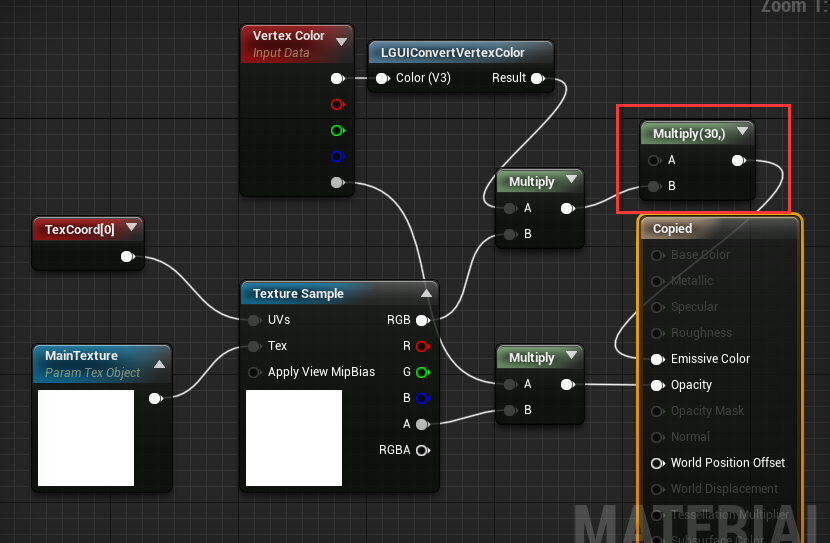

Use custom material for UI elements
LGUI can use custom material to change the look of our UI elements.
LGUI support Surface material domain.
Examples 1, use a emissive material to make our text glow.
Note: Glow is a world space post process effect, so only world space UI can do this, and post process setting must enable glow.
- First of all, copy material LGUI_Standard from LGUI Content folder (You may need to check Show Plugin Content if it is not visible). And paste it to your project content directory.
- Change the material node like the image below:
 - Select a UIText, and drag the material you just modified to Custom Material slot:
Now the text should look glow:
Example 2, use texture to maskout our sprite.
Note: UISprite render a UISpriteData. UISpriteData contains the info of a small area from a packed atlas texture.
- First of all, copy material LGUI_Standard from LGUI Content folder (You may need to check Show Plugin Content if it is not visible). And paste it to your project content directory.
- Change the material node like the image below (note the mask texture's TexCoord[1], and don't forget to select a mask texture for Texture Sample node):
- Select a UISprite, and drag the material you just modifyed to Custom Material slot:
- Now the UISprite look not right, because we have not tell LGUI to setup the data for TexCoord[1]. Select LGUICanvas, in the Additional Shader Channels property, check on UV1.
Now the result should be good: